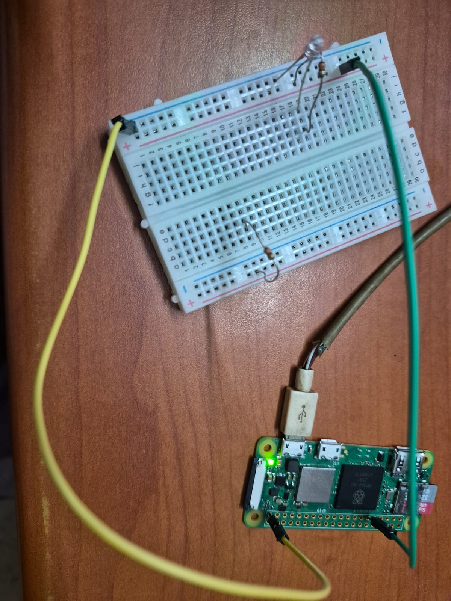

Projects
Project 01 — LED Blink

My first hands-on IoT project using Raspberry Pi Zero 2 W and Python.
Hardware: Raspberry Pi Zero 2 W
Technology: Python, GPIO Zero
Status: Completed ✅
View Project Documentation →Project 02 — Motion Capture Camera

A motion-detecting camera that saves a photo and records a video clip whenever something moves, including 3 seconds from before the motion started. No motion sensor needed: the camera itself detects motion.
Hardware: Raspberry Pi Zero 2 W, Raspberry Pi Camera Module
Technology: Python, picamera2, NumPy, H.264, ffmpeg
Status: Completed ✅
View Project Documentation →